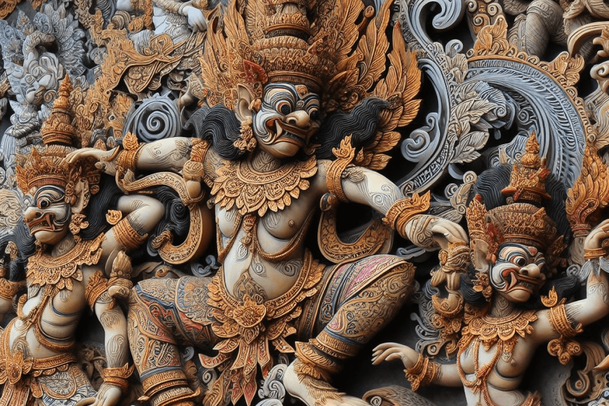

Selamat datang di BaliYuks - panduan terpercaya untuk menjelajahi pesona Bali! Di sini, Anda akan menemukan informasi lengkap tentang destinasi wisata, keunikan budaya, kuliner lezat, serta berbagai tips dan trik untuk
menjadikan perjalanan Anda di Bali tak terlupakan. Mari temukan keindahan dan keajaiban pulau dewata bersama BaliYuks!
Seputar Provinsi bali
Ada Apa Bali?
Bali adalah sebuah pulau yang memukau di Indonesia, dikenal sebagai "Pulau Dewata" dan sering dijuluki "Pulau Seribu Pura". Kehidupan di Bali tercermin dalam harmoni antara kebudayaan, keagamaan, dan alam yang indah.
Mayoritas penduduknya menganut agama Hindu, yang tercermin dalam pura-pura indah yang tersebar di seluruh pulau. Falsafah hidup Tri Hita Karana menjadi landasan bagi kehidupan masyarakat Bali, menekankan keseimbangan
antara manusia, alam, dan tuhan. Selain kekayaan budaya dan keagamaan, Bali juga dikenal karena keindahan alamnya yang menakjubkan, termasuk pantai-pantai berpasir putih, sawah terasering yang hijau, dan gunung-gunung yang
menjulang. Industri pariwisata yang berkembang pesat memungkinkan wisatawan untuk menikmati keindahan alam, seni, dan budaya Bali. Namun, di balik keindahannya, Bali juga memiliki tantangan dan perubahan. Pengembangan
pariwisata yang cepat membawa dampak terhadap lingkungan dan budaya lokal. Oleh karena itu, penting bagi Bali untuk menjaga keseimbangan antara perkembangan ekonomi dan pelestarian lingkungan serta kebudayaan. Secara
keseluruhan, Bali adalah destinasi yang memikat dengan kekayaan budaya, keindahan alam, dan keramahan penduduknya.
letak geografis Bali?
Bali merupakan sebuah pulau yang terletak di bagian barat Kepulauan Nusa Tenggara, Indonesia. Koordinat geografisnya berkisar antara 8°25′ hingga 8°50′ Lintang Selatan dan 114°25′ hingga 115°42′ Bujur Timur. Pulau Bali
memiliki luas sekitar 5.780 kilometer persegi (sekitar 2.230 mil persegi) dan merupakan bagian dari provinsi Bali. Terpisah dari Pulau Jawa oleh Selat Bali dan dari Pulau Lombok oleh Selat Lombok.
Pulau Bali memiliki bentuk yang relatif oval dan memiliki garis pantai yang berliku-liku, dengan dataran rendah yang cukup luas di sebelah selatan dan dataran tinggi di bagian utara, termasuk Gunung Agung yang merupakan
gunung tertinggi di pulau ini.
Mari kita mulai perjalanan kita menyusuri sejarah Bali - sebuah perjalanan yang akan membawa kita ke masa lalu pulau yang kaya akan budaya ini. Dari jejak-jejak kerajaan Hindu-Buddha pada abad ke-14 M, hingga
masa kolonial yang penuh gejolak, dan perjalanan Bali menuju kemerdekaan serta pesatnya perkembangan pasca-kemerdekaan. Yuk, kita telusuri bersama bagaimana Bali menjelma menjadi pulau yang kita kenal hari ini!
Abad Ke-14 M
Pada abad ke-14 Masehi, Bali jatuh di bawah kekuasaan Majapahit yang dipimpin oleh Mahapatih Gajah Mada. Ini adalah periode yang penting dalam sejarah Bali, di mana pulau ini menjadi bagian dari kerajaan
yang luas dan berpengaruh di Nusantara. Di bawah pemerintahan Majapahit, Bali mengalami periode stabilitas politik yang relatif lama, sementara kebudayaannya terus berkembang. Memasuki era abad ke-15 hingga ke-19, Bali
menyaksikan kemajuan yang signifikan dalam berbagai bidang, termasuk seni, sastra, dan arsitektur. Ini adalah masa keemasan bagi seni dan kebudayaan Bali, di mana karya-karya monumental seperti relief-relief batu, ukiran
kayu, dan seni pahat menjadi ciri khasnya. Seni tari, musik, dan seni lukis juga berkembang pesat, menciptakan warisan budaya yang kaya dan beragam. Selama periode ini, beberapa kerajaan besar muncul dan berkuasa di Bali.
Di antara mereka adalah Kerajaan Gelgel, yang menjadi pusat kebudayaan dan politik yang penting. Kerajaan Klungkung, Karangasem, Mengwi, Buleleng, dan Tabanan juga memainkan peran penting dalam sejarah Bali pada saat itu.
Mereka tidak hanya menjadi pusat kekuasaan politik, tetapi juga menjadi pelindung seni, sastra, dan agama Hindu-Bali yang khas.
Masa Kolonial
Pada masa kolonial, Bali mengalami sentuhan pengaruh Barat yang datang melalui perdagangan dan eksplorasi. Interaksi ini, khususnya dengan bangsa Eropa, membawa perubahan signifikan dalam politik, ekonomi,
dan budaya pulau ini. Belanda mulai menunjukkan minatnya untuk menguasai Bali sejak abad ke-17 Masehi. Namun, usaha mereka untuk mengambil alih penuh pulau ini baru berhasil pada abad ke-19 Masehi setelah serangkaian
konflik dan perang dengan beberapa kerajaan di Bali yang berlangsung cukup lama. Selama periode ini, Belanda menetapkan kekuasaan kolonialnya di Bali dengan menerapkan sistem pemerintahan yang otoriter dan menggantikan
struktur pemerintahan tradisional Bali dengan administrasi kolonial. Mereka juga mengontrol perdagangan dan sumber daya alam pulau untuk kepentingan ekonomi kolonial mereka sendiri. Selain itu, kehadiran Belanda juga
membawa perubahan budaya yang signifikan. Pengaruh Barat, terutama dari Belanda, mulai memengaruhi aspek-aspek kehidupan sehari-hari di Bali, termasuk dalam bidang arsitektur, seni, dan bahasa. Namun, meskipun terjadi
interaksi antara budaya Bali dan Barat, nilai-nilai dan tradisi budaya Bali tetap bertahan kuat di tengah tekanan kolonial.
Abad ke-18 M
Ketika abad ke-8 menjelang, Bali memasuki periode yang melihat perubahan besar dalam kebudayaannya. Di tengah aliran dagang yang semakin intensif dan pertukaran budaya yang berkembang pesat, Bali mulai
merasakan pengaruh kuat dari ajaran Hindu-Buddha yang dibawa oleh pedagang dan pemuka agama dari tanah air asalnya, India dan Jawa. Prasasti-prasasti yang berasal dari periode ini, terutama yang ditemukan pada abad ke-8
Masehi, memberikan bukti yang menarik tentang keberadaan kerajaan-kerajaan kecil yang berdiri tegak di Bali. Kerajaan-kerajaan ini tidak hanya hidup secara mandiri, tetapi juga menjalin hubungan yang erat dengan
kerajaan-kerajaan besar di Jawa, seperti Tarumanegara, Mataram Kuno, dan Singhasari. Ini mencerminkan jaringan politik dan perdagangan yang luas yang telah dibangun pada saat itu. Tidak hanya dalam catatan sejarah, tetapi
juga dalam prasasti-prasasti yang ditemukan, nama Bali Dwipa (“Pulau Bali”) terus muncul. Salah satu contohnya adalah pilar prasasti Blanjong, yang diperkirakan berasal dari tahun 914 Masehi. Prasasti ini, yang ditulis
oleh Sri Kesari Warmadewa, mengkonfirmasi keberadaan Bali Dwipa dan menambahkan kedalaman historis ke akar budaya pulau ini.
Abad Ke-16 M
Pada abad ke-16 Masehi, Indonesia menyaksikan kedatangan Islam yang signifikan, yang membawa perubahan besar dalam lanskap agama dan politik di Nusantara. Di Jawa, agama Islam mulai menyebar dengan cepat
dan menyebabkan keruntuhan banyak kerajaan Hindu-Buddha yang sebelumnya berkuasa. Kedatangan Islam ke Jawa tidak hanya berdampak lokal, tetapi juga memengaruhi pulau-pulau tetangga, termasuk Bali. Banyak pengungsi dari
Jawa, yang melarikan diri dari penindasan atau perubahan politik yang disebabkan oleh konversi agama, mencari perlindungan dan tempat tinggal baru di Bali. Kedatangan mereka membawa bersama pengaruh budaya Islam yang kuat,
termasuk tradisi, praktik keagamaan, bahasa, dan sistem nilai. Meskipun Bali tetap menjadi bastion kebudayaan Hindu yang kuat, kedatangan pengungsi Jawa yang membawa Islam mengakibatkan dinamika budaya yang berubah di
pulau ini. Interaksi antara budaya Hindu Bali dan Islam Jawa menghasilkan sintesis budaya yang unik, menciptakan warisan budaya yang kaya dan beragam di Bali yang tetap terlihat hingga hari ini.
Setelah Kemerdekaan
Setelah kemerdekaan Republik Indonesia pada tanggal 17 Agustus 1945, Bali mengalami perkembangan yang signifikan dalam berbagai aspek kehidupan. Pemerintah Indonesia mengalokasikan dana untuk membangun
infrastruktur di Bali, termasuk jalan raya, bandara, pelabuhan, dan sarana transportasi lainnya, yang meningkatkan konektivitas pulau ini dengan wilayah lain di Indonesia dan dunia. Pertumbuhan ekonomi pun pesat, dengan
sektor pariwisata menjadi penggerak utama. Namun, Bali tetap memelihara dan mempertahankan kekayaan budaya dan tradisinya, seperti upacara adat, tarian, musik, dan seni rupa. Pemerintah juga meningkatkan akses pendidikan
dan layanan kesehatan di Bali, sementara industri kreatif berkembang pesat di pulau ini. Dengan demikian, Bali tidak hanya berkembang secara ekonomi dan infrastruktur, tetapi juga mempertahankan identitas budayanya yang
kaya dan menjadi salah satu destinasi wisata terkemuka di Indonesia dan dunia.
Mengenal seni tari khas bali
TARI BARONG
Tarian Barong adalah warisan budaya Bali yang terkenal dan penting, menampilkan makhluk mitologis Barong sebagai simbol kebaikan dan perlindungan dalam kepercayaan Hindu. Ceritanya sering kali menggambarkan pertarungan
antara Barong dan Rangda, melambangkan perjuangan antara kebaikan dan kejahatan. Dipentaskan dalam upacara adat, ritual keagamaan, dan festival, penarinya mengenakan kostum dari bambu dan kayu dengan gerakan yang kuat
dan energik. Selain menjadi bagian dari upacara, tarian ini juga menarik bagi wisatawan yang ingin merasakan kekayaan budaya dan spiritual Bali.
TARI KECAK
Tari Kecak adalah tarian tradisional Bali yang unik karena tidak melibatkan penggunaan musik gamelan, melainkan suara-suara nyanyian para penari. Ceritanya sering kali mengambil episode dari epik Ramayana, dengan
puluhan atau bahkan ratusan penari yang duduk melingkar sambil menyanyikan "cak" secara berulang-ulang. Para penari menciptakan berbagai pola gerakan yang dramatis, menggambarkan kisah-kisah heroik dan mitologis. Tari
Kecak biasanya dipentaskan di tempat terbuka, menjadikannya pengalaman budaya yang menakjubkan bagi para penonton.
TARI PENDEN
Tari Pendet adalah salah satu tarian tradisional Bali yang paling khas dan dianggap sebagai tarian penyambutan. Biasanya, tarian ini dilakukan oleh sekelompok penari perempuan yang memegang bunga dan wadah kecil yang
berisi bunga dan kembang. Gerakan mereka yang lemah gemulai mengikuti melodi musik yang lembut dan mengalun. Tarian ini sering dipentaskan sebagai bagian dari upacara keagamaan, seperti ritual penyucian di kuil atau
sebagai bentuk penghormatan kepada dewa. Tari Pendet dianggap sebagai ungkapan rasa syukur dan kegembiraan atas kehadiran dewa dan menjadi simbol keindahan dan kedamaian di Bali.
TARI TOPENG
Tari Topeng adalah salah satu tarian tradisional Bali yang menampilkan penari yang mengenakan topeng dan memerankan berbagai karakter mitologis atau sejarah. Setiap topeng memiliki makna dan karakteristiknya sendiri.
Para penari menggunakan gerakan tubuh dan mimik wajah untuk mengungkapkan karakter yang mereka perankan. Tari Topeng sering dipentaskan dalam berbagai upacara adat, ritual keagamaan, dan pertunjukan seni di Bali
sebagai bentuk penghormatan kepada leluhur atau dewa. Ini juga menjadi daya tarik bagi wisatawan yang ingin merasakan kekayaan budaya Bali.
TARI BARONG
Tarian Barong adalah warisan budaya Bali yang terkenal dan penting, menampilkan makhluk mitologis Barong sebagai simbol kebaikan dan perlindungan dalam kepercayaan Hindu. Ceritanya sering kali menggambarkan pertarungan
antara Barong dan Rangda, melambangkan perjuangan antara kebaikan dan kejahatan. Dipentaskan dalam upacara adat, ritual keagamaan, dan festival, penarinya mengenakan kostum dari bambu dan kayu dengan gerakan yang kuat
dan energik. Selain menjadi bagian dari upacara, tarian ini juga menarik bagi wisatawan yang ingin merasakan kekayaan budaya dan spiritual Bali.
TARI KECAK
Tari Kecak adalah tarian tradisional Bali yang unik karena tidak melibatkan penggunaan musik gamelan, melainkan suara-suara nyanyian para penari. Ceritanya sering kali mengambil episode dari epik Ramayana, dengan
puluhan atau bahkan ratusan penari yang duduk melingkar sambil menyanyikan "cak" secara berulang-ulang. Para penari menciptakan berbagai pola gerakan yang dramatis, menggambarkan kisah-kisah heroik dan mitologis. Tari
Kecak biasanya dipentaskan di tempat terbuka, menjadikannya pengalaman budaya yang menakjubkan bagi para penonton.
TARI PENDEN
Tari Pendet adalah salah satu tarian tradisional Bali yang paling khas dan dianggap sebagai tarian penyambutan. Biasanya, tarian ini dilakukan oleh sekelompok penari perempuan yang memegang bunga dan wadah kecil yang
berisi bunga dan kembang. Gerakan mereka yang lemah gemulai mengikuti melodi musik yang lembut dan mengalun. Tarian ini sering dipentaskan sebagai bagian dari upacara keagamaan, seperti ritual penyucian di kuil atau
sebagai bentuk penghormatan kepada dewa. Tari Pendet dianggap sebagai ungkapan rasa syukur dan kegembiraan atas kehadiran dewa dan menjadi simbol keindahan dan kedamaian di Bali.
TARI TOPENG
Tari Topeng adalah salah satu tarian tradisional Bali yang menampilkan penari yang mengenakan topeng dan memerankan berbagai karakter mitologis atau sejarah. Setiap topeng memiliki makna dan karakteristiknya sendiri.
Para penari menggunakan gerakan tubuh dan mimik wajah untuk mengungkapkan karakter yang mereka perankan. Tari Topeng sering dipentaskan dalam berbagai upacara adat, ritual keagamaan, dan pertunjukan seni di Bali
sebagai bentuk penghormatan kepada leluhur atau dewa. Ini juga menjadi daya tarik bagi wisatawan yang ingin merasakan kekayaan budaya Bali.
Menjelajahi Destinasi Keindahan Bali
Rekomendasi
DESTINASI WISATA
Pura Lempuyang
Pura Lempuyang, destinasi wisata yang tenar di Pulau Bali, Indonesia, punya pengalaman yang bikin hati berdebar. Naikin 1.700 anak tangga buat nyampe ke sana tuh kayak petualangan penyucian diri. Di puncaknya, kita
disuguhin panorama Gunung Agung yang megah, tapi yang paling seru adalah "Gerbang Surga" yang bikin kita merasa kayak lagi di ambang pintu surga beneran. Dengan keindahan alam yang bikin nganga dan nilai-nilai spiritual
yang terasa, Pura Lempuyang jadi destinasi wajib kalau lagi di Bali.
Tanah Lot di Pulau Bali, dengan candi kuno yang berdiri megah di atas batu karang besar, menawarkan pengalaman matahari terbenam yang spektakuler di atas laut. Keindahan alamnya yang memukau menciptakan latar belakang
yang sempurna bagi momen yang tak terlupakan ini. Pesonanya juga terletak pada aura spiritual yang kuat yang dirasakan oleh pengunjung, menambah kesan magis dari destinasi wisata ini. Selain itu, suasana budaya Bali yang
autentik dengan warung-warung di sekitar pura menjual kerajinan tangan lokal dan kuliner khas Bali, memberikan pengalaman wisata yang lengkap bagi para pengunjung.
Pura Ulun Danu Bratan menarik karena lokasinya yang spektakuler di tepi Danau Bratan, dikelilingi oleh Gunung Beratan. Arsitektur tradisional Bali yang megah dipadukan dengan alam yang memukau menciptakan pemandangan
luar biasa. Keunikan lainnya terletak pada perannya sebagai tempat ibadah Dewi Danu, menunjukkan hubungan erat antara agama Hindu dan lingkungan alam. Saat air Danau Bratan naik pada musim hujan, pura ini terlihat
melayang di atas permukaan air, menciptakan pemandangan memesona. Kehadirannya tidak hanya menarik wisatawan, tapi juga memberikan pengalaman spiritual bagi pencari kedamaian.
Pantai Kelingking di Pulau Nusa Penida, Bali, punya keunikan luar biasa dengan tebingnya yang mirip kepala hewan super besar, seperti T-Rex! Nama lainnya "T-Rex Bay" karena itu. Pemandangannya beda banget dan jadi magnet
buat pengunjung. Pantainya punya pasir putih lembut dan air lautnya biru toska yang bening banget, kontras dengan tebing-tebing curam yang menjulang tinggi di sekitarnya. Buat nyampe pantai ini, kita harus turun ratusan
anak tangga batu, bikin sensasi petualangan banget. Dengan keindahan alamnya yang luar biasa dan pemandangan tebingnya yang beda, Pantai Kelingking jadi destinasi wisata yang musti dikunjungi di Pulau Nusa Penida.
Di Bali, ritual kea gamaan menyatu dengan kehidupan sehari-hari. Mulai dari upacara persembahan hingga festival agama, kepercayaan Hindu mewarnai setiap
aktivitas.
Upacara kelahiran, pernikahan, dan kematian, serta festival seperti Galungan dan Nyepi.
Adat dan tradisi Bali menggam barkan ke kayaan budaya yang mendalam. Sistem sosial yang terstruktur, tata cara pernikahan, dan adat istiadat sehari-hari
mencerminkan nilai-nilai yang diwarisi dari generasi ke generasi.
Seni Lukis dan Patun g di Bali mencermi nkan keindahan dan kedalaman budaya pulau ini. Lukisan Bali sering menggambarkan mitologi Hindu, pemandangan alam,
dan kehidupan sehari-hari dengan warna cerah dan detail yang rumit.